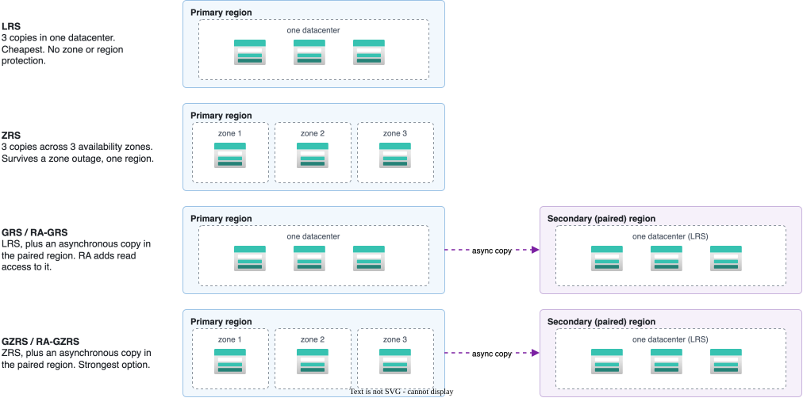
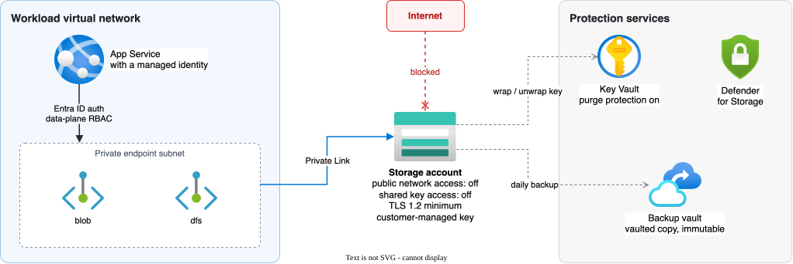
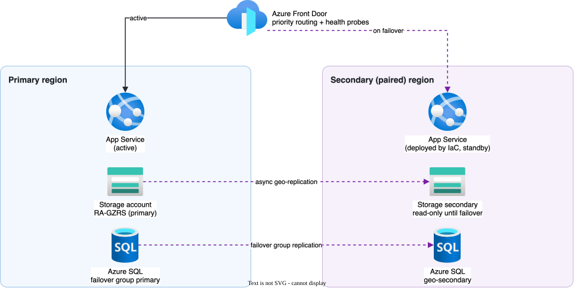

Azure Storage is the service everyone deploys on day one and then quietly under-engineers for years. You pick a name, click create, and it works. But the same service holds your data lake, your file shares, your queues, your backups and your audit logs, and the defaults aren't what you want for any of them in production.
This is the guide I'd hand to a platform team before they create their first production storage account. It covers the decisions that are hard to change later, the protection features people mix up, a security baseline, and a working Bicep template. I've checked the details against Microsoft's documentation, because several things in this space have changed in the last year or two.
Start with the account type and the namespace
The storage account is your boundary for billing, security, networking and redundancy. For new work, three kinds matter:
| Account kind | Use it for |
|---|---|
| Standard general-purpose v2 | Almost everything: blobs, data lakes, Azure Files on HDD, queues and tables. Supports every redundancy option and access tier. |
| Premium block blob | Low-latency, high-transaction blob workloads such as ingestion pipelines or ML feature stores. |
| Premium file shares | Latency-sensitive SMB or NFS shares. |
General-purpose v1 accounts are being retired. You can upgrade them to v2 without downtime or copying data, so there's no reason to keep them.
Hierarchical namespace: decide on purpose
Turning on the hierarchical namespace (HNS) makes the account an Azure Data Lake Storage account: real directories, atomic renames, and POSIX-style ACLs. Analytics engines like Spark and Fabric benefit a lot, because a directory rename becomes one operation instead of millions.
Two things that are often stated wrong:
- You can add HNS later. Microsoft supports a one-way upgrade of an existing account. Writes are blocked while it runs, and it can't be undone, so test it first. Blob soft delete blocks the upgrade, so you'd have to turn that off, upgrade, and turn it back on. It's still simpler to decide at creation.
- HNS has trade-offs. Blob versioning isn't supported on HNS accounts, and point-in-time restore depends on versioning. So an account can be a data lake or have versioning and point-in-time restore, but not both. Backups, images and app content usually belong in a flat-namespace account.
That's one reason I separate workloads into different accounts: an analytics lake, an application content account and a log archive have different needs, and one shared account forces bad compromises.
Access tiers and lifecycle rules
Blob cost has two sides that pull against each other: what you pay to store data, and what you pay to read and write it. Cooler tiers are cheaper to store and more expensive to access, and each has a minimum stay before you pay an early deletion charge:
| Tier | Minimum stay | Good for |
|---|---|---|
| Hot | None | Data read or written often |
| Cool | 30 days | Data read occasionally, like older reports |
| Cold | 90 days | Rarely read, but needs to be available in milliseconds |
| Archive | 180 days | Long-term retention. It's offline: rehydrating can take up to 15 hours. |
Don't choose a tier on price per GB alone. If data in Cool gets read often, the access charges can easily cost more than keeping it Hot. Model it with your real read pattern.
Two newer details matter here. First, the archive tier only works with LRS, GRS and RA-GRS, not with zone-redundant options. If you choose GZRS for resilience, plan on Cold as your coldest tier. Second, Microsoft now offers smart tier, which moves block blobs from Hot to Cool after 30 days without access and to Cold after 90, and back to Hot when they're read. It needs a zone-redundant account (ZRS, GZRS or RA-GZRS). It's a good default when you don't know the access pattern and don't want to maintain rules.
When you do know the pattern, a lifecycle policy is still the most precise tool. This one tiers by last access time, cleans up old versions and snapshots, and deletes after about seven years. Last-access conditions need access time tracking turned on for the account.
{
"rules": [
{
"name": "tier-by-access",
"enabled": true,
"type": "Lifecycle",
"definition": {
"filters": { "blobTypes": ["blockBlob"] },
"actions": {
"baseBlob": {
"tierToCool": { "daysAfterLastAccessTimeGreaterThan": 30 },
"tierToCold": { "daysAfterLastAccessTimeGreaterThan": 120 },
"tierToArchive": { "daysAfterLastAccessTimeGreaterThan": 365 },
"delete": { "daysAfterModificationGreaterThan": 2555 }
},
"snapshot": { "delete": { "daysAfterCreationGreaterThan": 90 } },
"version": { "delete": { "daysAfterCreationGreaterThan": 90 } }
}
}
}
]
}The archive step only applies on an LRS, GRS or RA-GRS account. Also allow up to 24 hours after you change a policy before it starts running.
The other storage services, briefly
- Azure Files gives you SMB and NFS shares, which makes it the easiest target for lift-and-shift apps that expect a file server. Azure File Sync can keep on-premises file servers as caches with the cloud share as the main copy. One caution: File Sync doesn't support customer-managed storage account failover, so don't fail over accounts it uses.
- Queue Storage is cheap, simple decoupling. Move to Service Bus when you need ordering, sessions, transactions, dead-lettering or publish-subscribe.
- Table Storage is a simple key-value store for point lookups. If you need secondary indexes or richer queries, look at Cosmos DB.
- Managed disks are their own decision. Premium SSD v2 lets you set IOPS and throughput separately from size, which usually beats over-provisioning capacity to get performance.
Redundancy: what each option protects
Zone-redundant options survive a zone outage. Geo-redundant options add an asynchronous copy in the paired region.

Editable source: assets/diagrams/azure-storage-1.drawio
My defaults: LRS for dev and data you can regenerate, ZRS for production that must stay in one region, and GZRS or RA-GZRS for production that needs to survive a regional outage. The "RA" versions let your application read from the secondary while the primary is healthy, but only if you code it to use the secondary endpoint.
Geo-replication is asynchronous. Microsoft says the delay is typically 15 minutes or less but doesn't put an SLA on it, and the Last Sync Time property tells you how far behind the secondary is. That matters when you fail over:
- Planned failover swaps primary and secondary, keeps the account geo-redundant, and shouldn't lose data. It's built for DR testing. It's blocked if the account uses change feed, object replication or point-in-time restore, or if Last Sync Time is more than two hours behind.
- Unplanned failover is for a real outage. Anything written after the Last Sync Time is lost, and the account becomes LRS in the new region until you turn geo-redundancy back on, which means re-replicating everything at your cost.
Data protection is not the same as redundancy
Redundancy protects you from Azure hardware and region failures. It doesn't protect you from people: if someone deletes a blob, the deletion replicates too. These features cover that, and none of them is on in a way you can rely on until you configure it:
- Blob and container soft delete: deleted data stays recoverable for 1 to 365 days. Enable both, because blob soft delete alone doesn't bring back a deleted container. Microsoft recommends at least seven days. I use 30 for production.
- Versioning: every overwrite keeps the previous version. Not available on HNS accounts. Clean up old versions with a lifecycle rule or they'll quietly grow your bill.
- Point-in-time restore: rolls a set of block blobs back to an earlier time. It needs soft delete, versioning and change feed, and its window must be at least one day shorter than the soft delete period.
- Immutable storage: time-based retention or legal holds that stop data being changed or deleted, even by an owner, once the policy is locked. This is what you use for audit logs and records you must keep tamper-proof.
All of these live inside the same storage account. Someone with enough rights over that account can still do a lot of damage, which is why the next layer exists.
Azure Backup for blobs
Azure Backup offers two kinds of blob backup, and they're managed together in a Backup vault (not the older Recovery Services vault):
- Operational backup is local. Under the hood it turns on point-in-time restore, versioning, change feed and soft delete, and puts a delete lock on the account. It keeps up to 360 days and restores quickly into the same account. Because the data never leaves the account, it doesn't protect you if the account itself is compromised.
- Vaulted backup copies data out of the account into the vault, where it can be kept for up to 10 years. Today it restores to a different storage account only. This is the copy that survives a malicious admin or ransomware, especially with an immutable vault.
New backup policies always include vaulted backup now, so you get both. For anything regulated or tier-1, that's what I want anyway. I wrote more about vault immutability and Resource Guard in my post on ransomware-resilient backups.
A security baseline for every production account
Reached only through private endpoints with Entra ID auth, encrypted with your key, scanned by Defender, and backed up to a vault.

Editable source: assets/diagrams/azure-storage-2.drawio
- Turn off shared key access so every request uses Microsoft Entra ID. Use user delegation SAS when you need to hand out time-limited links; avoid account and service SAS, which are signed with account keys.
- Turn off public network access and use private endpoints for each sub-resource you use. An HNS account needs both
blobanddfs. - Block anonymous blob access.
- Require TLS 1.2 or later and HTTPS only.
- Give workloads data-plane roles like Storage Blob Data Contributor through managed identities, never account keys in app settings.
- Use customer-managed keys for regulated data, with purge protection on the key vault (Azure requires it).
- Enable Defender for Storage for threat detection and malware scanning on upload, especially on accounts that receive files from outside.
- Send resource logs to Log Analytics with a diagnostic setting.
Encryption, briefly
Everything in Azure Storage is already encrypted at rest with AES-256, at no cost, and you can't turn it off. Your decision is who controls the key:
- Microsoft-managed keys are the default and fine for non-regulated data.
- Customer-managed keys in Key Vault or Managed HSM let you rotate and revoke. If you configure them when creating the account, Azure requires a user-assigned managed identity to access the key.
- Encryption scopes let you use different keys for different containers or blobs, which is handy for per-tenant keys in one account.
- Infrastructure encryption adds a second layer with a separate Microsoft-managed key. It can only be enabled when you create the account, and Microsoft says most workloads don't need it. Turn it on when a compliance requirement explicitly asks for double encryption, not by reflex.
- Client-side encryption in the SDK is for the rare case where Microsoft must never see plaintext. Use version 2, and accept that server-side features like malware scanning only see ciphertext.
Storage in a multi-region design
Storage failover gives you the data. The rest of the application has to be ready in the other region too.

Editable source: assets/diagrams/azure-storage-3.drawio
Failing over a storage account doesn't fail over your application. In a real DR design the secondary region already has the app deployed by the same IaC, the database replicated with a failover group, and Front Door ready to switch traffic when health probes fail.
If you only need part of the data in another region, object replication copies selected containers or prefixes to another account asynchronously, which can be cheaper than replicating everything. It needs versioning and change feed, and an account with object replication policies can't use planned failover.
Whatever you choose, write a runbook: what triggers failover, the exact steps, how traffic moves, how you check data consistency, and how you fail back. Then rehearse it. Planned failover exists precisely so you can test without losing data.
Design for the account limits
A standard account has a default ceiling of 20,000 requests per second, or 40,000 in Microsoft's larger regions, plus ingress and egress limits. Beyond that, Azure returns 503 or 500 errors and your app needs exponential backoff. Lifecycle policies and backups count against the same limit. If one workload can hit the ceiling, shard across accounts by tenant or workload rather than waiting for a quota increase.
To find hot data worth keeping in the Hot tier, a simple query over resource logs helps:
StorageBlobLogs
| where TimeGenerated > ago(7d) and OperationName == "GetBlob"
| summarize Reads = count() by Uri
| top 20 by Reads descA hardened account in Bicep
This is a baseline for an application content account: flat namespace so versioning and point-in-time restore work, GZRS, no public access, no shared keys, and a customer-managed key through a user-assigned identity. For a data lake, set isHnsEnabled: true and remove versioning and the restore policy, since HNS doesn't support them.
param storageName string
param location string = resourceGroup().location
param cmkKeyVaultUri string
param cmkKeyName string
@description('User-assigned identity with Key Vault Crypto Service Encryption User on the key')
param cmkIdentityId string
resource sa 'Microsoft.Storage/storageAccounts@2023-05-01' = {
name: storageName
location: location
sku: { name: 'Standard_GZRS' }
kind: 'StorageV2'
identity: {
type: 'UserAssigned'
userAssignedIdentities: { '${cmkIdentityId}': {} }
}
properties: {
minimumTlsVersion: 'TLS1_2'
supportsHttpsTrafficOnly: true
allowBlobPublicAccess: false
allowSharedKeyAccess: false
publicNetworkAccess: 'Disabled'
networkAcls: { defaultAction: 'Deny', bypass: 'AzureServices' }
encryption: {
keySource: 'Microsoft.Keyvault'
identity: { userAssignedIdentity: cmkIdentityId }
keyvaultproperties: {
keyvaulturi: cmkKeyVaultUri
keyname: cmkKeyName // no version, so new key versions are picked up
}
services: {
blob: { enabled: true, keyType: 'Account' }
file: { enabled: true, keyType: 'Account' }
}
}
}
}
resource blobService 'Microsoft.Storage/storageAccounts/blobServices@2023-05-01' = {
parent: sa
name: 'default'
properties: {
deleteRetentionPolicy: { enabled: true, days: 30 }
containerDeleteRetentionPolicy: { enabled: true, days: 30 }
isVersioningEnabled: true
changeFeed: { enabled: true, retentionInDays: 90 }
restorePolicy: { enabled: true, days: 29 } // must be shorter than soft delete
}
}Add private endpoints and their DNS zone groups, a diagnostic setting, and the backup configuration in the same deployment. Deploy it from a pipeline, never by hand.
Checklist
- Separate accounts for workloads with different needs: data lake, app content, logs.
- HNS decided on purpose, knowing it rules out versioning and point-in-time restore.
- Redundancy chosen per workload, remembering archive doesn't work with zone-redundant options.
- Lifecycle rules or smart tier on every account that holds more than a few GB.
- Blob and container soft delete on; versioning and point-in-time restore where supported.
- Azure Backup with a vaulted copy for regulated and tier-1 data.
- Shared keys off, public network off, private endpoints, TLS 1.2, data-plane RBAC.
- Customer-managed keys with purge protection where compliance needs them.
- Defender for Storage and diagnostic settings on.
- A DR runbook that's been rehearsed with planned failover.
None of this is exotic. It's mostly about making a handful of decisions deliberately before the first byte lands, because several of them are painful to change afterwards.
Sources
- Access tiers for blob data (Microsoft Learn)
- Optimize Azure Blob Storage costs with smart tier (Microsoft Learn)
- Azure Data Lake Storage hierarchical namespace (Microsoft Learn)
- Upgrading Azure Blob Storage with Azure Data Lake Storage capabilities (Microsoft Learn)
- Azure storage disaster recovery planning and failover (Microsoft Learn)
- Azure Storage failover FAQ (Microsoft Learn)
- Soft delete for blobs (Microsoft Learn)
- Point-in-time restore for block blobs (Microsoft Learn)
- Blob versioning (Microsoft Learn)
- Overview of Azure Blob backup (Microsoft Learn)
- Customer-managed keys for Azure Storage encryption (Microsoft Learn)
- Enable infrastructure encryption for double encryption of data (Microsoft Learn)
- Scalability and performance targets for standard storage accounts (Microsoft Learn)